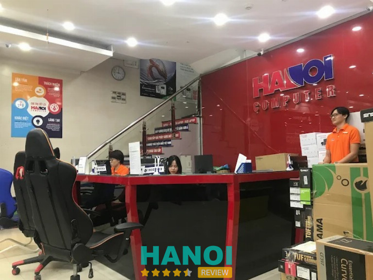
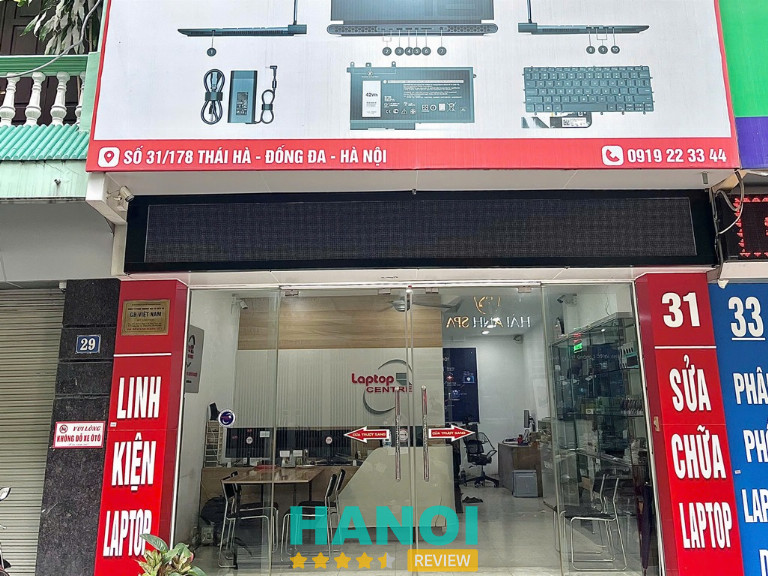
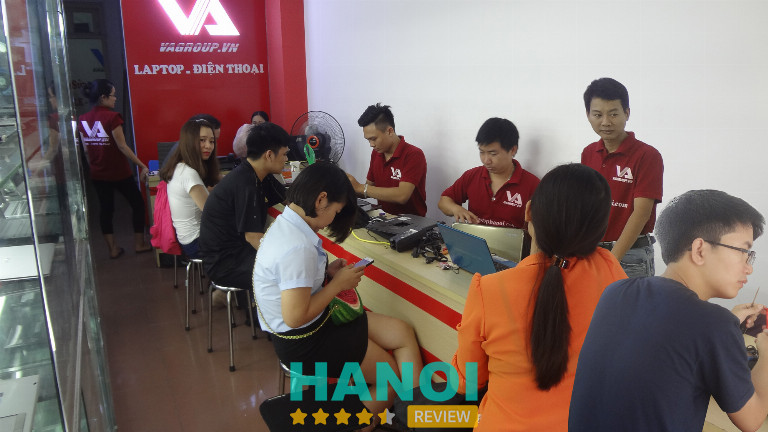
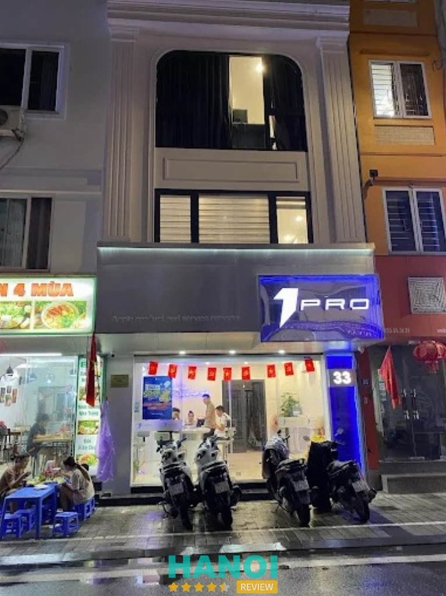
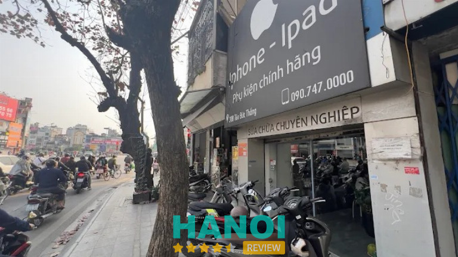
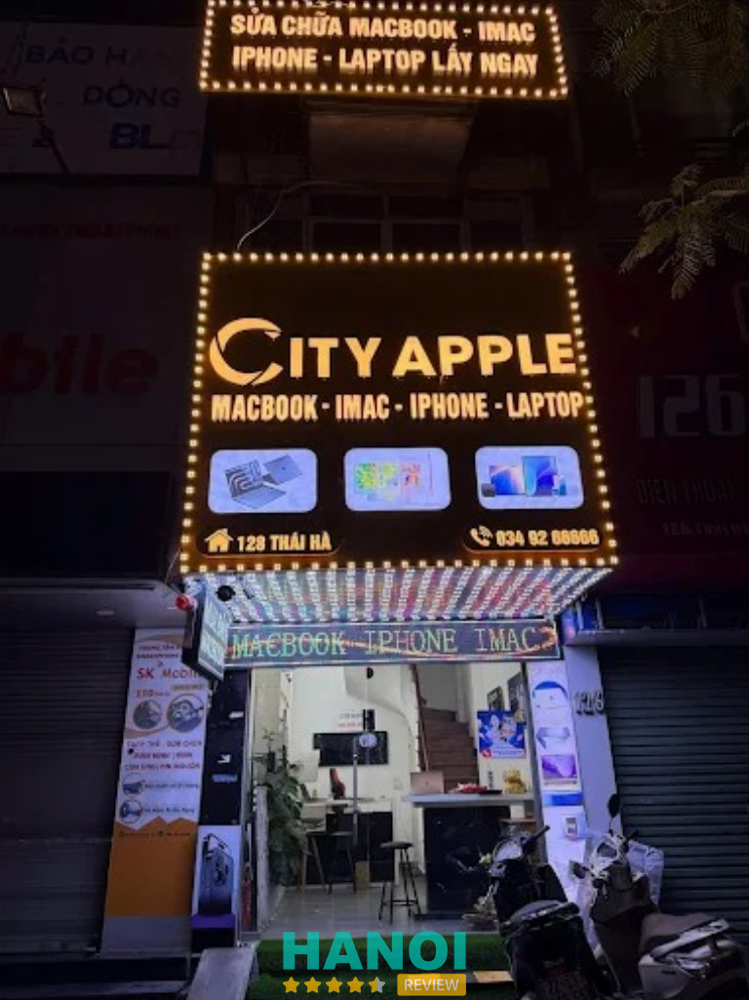

11 Địa chỉ sửa Macbook ở Đống Đa uy tín lấy ngay
Chiếc laptop cao cấp của bạn bỗng dưng gặp sự cố kỹ thuật khiến mọi kế hoạch công việc trì trệ và gây ra nhiều lo lắng. Việc tìm kiếm một trung tâm sửa Macbook ở Đống Đa chuyên nghiệp là giải pháp cấp thiết để khôi phục hiệu suất hoạt động tốt nhất cho thiết bị. Những đơn vị hàng đầu tại khu vực này cam kết mang lại sự an tâm tuyệt đối nhờ quy trình kỹ thuật minh bạch cùng linh kiện chính hãng.
Top 11 Địa chỉ sửa Macbook tại Đống Đa nhanh chóng, tiết kiệm chi phí
Nhu cầu sửa Macbook ở Đống Đa ngày càng tăng khi thiết bị gặp lỗi phần cứng, phần mềm hoặc xuống cấp sau thời gian sử dụng. Khu vực này tập trung nhiều đơn vị kỹ thuật, thuận tiện di chuyển, hỗ trợ kiểm tra nhanh, giúp tiết kiệm thời gian và chi phí, đồng thời mang lại sự yên tâm khi khắc phục sự cố.
UFO TECH – 108 ngõ 101E3 P. Trung Liệt
UFO TECH là đơn vị uy tín chuyên cung cấp các giải pháp khắc phục sự cố phần cứng và phần mềm cho dòng máy tính xách tay cao cấp của Apple. Khách hàng tìm đến địa chỉ sửa Macbook ở Đống Đa, Hà Nội tại đây sẽ được kiểm tra thiết bị kỹ lưỡng bằng hệ thống máy móc hiện đại và chính xác.
Quy trình làm việc tại cửa hàng diễn ra minh bạch dưới sự quan sát trực tiếp của người dùng nhằm duy trì tính trung thực tuyệt đối. Đội ngũ kỹ thuật viên xử lý nhanh chóng các lỗi từ đơn giản đến phức tạp, giúp thiết bị khôi phục hiệu suất hoạt động ổn định như ban đầu.
Dưới đây là các hạng mục dịch vụ sửa Macbook ở Hà Nội phổ biến được thực hiện:
- Thay thế màn hình Retina chính hãng với độ hiển thị sắc nét và màu sắc chuẩn xác.
- Thay pin mới có dung lượng chuẩn, khắc phục triệt để tình trạng chai pin hoặc sập nguồn đột ngột.
- Sửa chữa bàn phím, Trackpad bị liệt hoặc ngấm nước gây hư hỏng bảng mạch bên trong.
- Nâng cấp ổ cứng SSD và dung lượng RAM giúp tăng tốc độ xử lý dữ liệu cho công việc.
- Xử lý các lỗi nguồn, lỗi chipset và các vấn đề liên quan đến mainboard trên tất cả các dòng máy.
- Vệ sinh máy, thay keo tản nhiệt định kỳ để bảo vệ linh kiện bên trong khỏi tác động của nhiệt độ cao.
- Cài đặt hệ điều hành macOS và các phần mềm ứng dụng theo yêu cầu riêng của từng khách hàng.
UFO TECH duy trì mức giá dịch vụ niêm yết rõ ràng và áp dụng chính sách bảo hành dài hạn cho mọi linh kiện thay thế. Việc lựa chọn đúng địa chỉ sửa Macbook ở Đống Đa, Hà Nội sẽ giúp tiết kiệm thời gian và tối ưu hóa chi phí vận hành cho thiết bị.
Thông tin liên hệ:
- Địa chỉ: 108 ngõ 101E3 P. Trung Liệt, Láng Hạ, Đống Đa
- Điện thoại: 0916 444 258
- Email: info@ufotech.vn
- Website: ufotech.vn
- Facebook: fb.com/suachuamacbookufotech
HNCOM Hà Nội – 284 Thái Hà
- Thời gian mở cửa: Từ 8:00 – 21:00 hàng ngày
HNCOM là điểm đến quen thuộc cho cộng đồng người dùng máy tính Apple tại thủ đô, chuyên cung cấp các giải pháp xử lý sự cố phần cứng và phần mềm chuyên sâu. Đơn vị tập trung vào việc đáp ứng nhu cầu tìm kiếm địa chỉ sửa Macbook ở Hà Nội với tiêu chuẩn kỹ thuật cao và quy trình làm việc minh bạch.

Mọi thiết bị khi mang đến đều được kiểm tra kỹ lưỡng để xác định đúng nguyên nhân hư hỏng. Kỹ thuật viên thực hiện các thao tác sửa chữa trực tiếp dưới sự quan sát của khách hàng, hỗ trợ xử lý nhanh chóng các lỗi phổ biến nhằm tối ưu hóa thời gian và hiệu suất công việc.
Các dịch vụ trọng tâm được triển khai tại hệ thống bao gồm:
- Thay thế linh kiện chính hãng cho tất cả các dòng Macbook Air, Macbook Pro, Macbook Retina và Macbook M1/M2/M3.
- Sửa chữa triệt để các lỗi trên mainboard, lỗi nguồn, máy không khởi động hoặc thiết bị hư hỏng do dính nước.
- Thay bàn phím, thay pin, thay mặt kính và cụm màn hình hiển thị lấy ngay trong ngày.
- Nâng cấp ổ cứng SSD tốc độ cao, mở rộng dung lượng lưu trữ cho các dòng máy đời cũ và đời mới.
- Cài đặt các phiên bản hệ điều hành macOS phù hợp, vệ sinh máy và thay keo tản nhiệt làm mát hệ thống định kỳ.
- Khắc phục các sự cố về âm thanh, liệt bàn di chuột trackpad, hỏng webcam hoặc các cổng kết nối ngoại vi.
- Cung cấp sạc Macbook và các phụ kiện chuyển đổi đi kèm cho người dùng.
Hệ thống duy trì chính sách hậu mãi chu đáo với chế độ bảo hành dài hạn cho mọi linh kiện và dịch vụ thay thế. Các khoản chi phí sửa chữa đều được thông báo chi tiết và niêm yết rõ ràng, giúp khách hàng hoàn toàn chủ động về mặt tài chính mà không lo ngại các vấn đề phát sinh ngoài ý muốn.
Thông tin liên hệ:
- Địa chỉ: Số 284 Thái Hà, P. Ô Chợ Dừa
- Điện thoại: 1900 1903
- Email: kdbl.dongda@hacom.vn
- Website: hacom.vn
- Facebook: fb.com/www.hacom.vn
TrueSmart – 33 Xã Đàn
Truesmart là điểm đến được nhiều người quan tâm khi nhắc đến sửa chữa Macbook tại khu vực nội thành. Không gian cửa hàng được bố trí khoa học, mang lại cảm giác gọn gàng và chuyên nghiệp ngay từ khi bước vào. Mỗi thiết bị khi tiếp nhận đều được kiểm tra cẩn thận, giúp quá trình xử lý diễn ra rõ ràng và nhất quán.
Hoạt động với định hướng chú trọng trải nghiệm thực tế, Truesmart xây dựng quy trình làm việc mạch lạc, dễ theo dõi. Thông tin về tình trạng máy được trao đổi cụ thể, hạn chế phát sinh không cần thiết trong quá trình sửa chữa. Nhờ vậy, cửa hàng sửa Macbook ở quận Đống Đa, Hà Nội này tạo được sự tin tưởng từ nhiều nhóm khách hàng khác nhau.
Những điểm nổi bật trong cách vận hành tại Truesmart gồm:
- Quy trình tiếp nhận và kiểm tra thiết bị được phân chia rõ ràng
- Thời gian xử lý linh hoạt theo từng tình trạng máy
- Linh kiện sử dụng có nguồn gốc minh bạch
- Chi phí được thông báo trước khi thực hiện
- Không gian chờ sạch sẽ, ngăn nắp
Truesmart duy trì phong cách làm việc ổn định, tập trung vào tính rõ ràng và hiệu quả trong từng khâu. Sự chỉn chu từ tiếp nhận đến hoàn thiện giúp cửa hàng giữ được dấu ấn riêng, đồng thời đáp ứng nhu cầu sửa Macbook ngày càng cao tại khu vực Đống Đa.
Thông tin liên hệ:
- Địa chỉ: 33 Xã Đàn, Phương Liên, Đống Đa
- Điện thoại: 0948 122 666
- Email: truesmartphone@gmail.com
- Website: truesmart.com.vn
- Facebook: fb.com/truesmartphone
Laptop Centre – Số 31/ 178 Thái Hà
Laptop Centre là địa chỉ chuyên biệt về dịch vụ kỹ thuật cho các dòng máy tính Apple, phục vụ nhu cầu tìm kiếm địa chỉ sửa Macbook ở Đống Đa, Hà Nội. Tại đây, mọi sự cố trên các dòng Macbook Air, Macbook Pro và iMac được đội ngũ kỹ thuật viên tiếp nhận và xử lý trực tiếp dựa trên tình trạng thực tế của máy.

Khách hàng khi mang thiết bị đến sẽ được kiểm tra công khai và nghe phân tích giải pháp khắc phục ngay tại chỗ. Quy trình này giúp người dùng nắm bắt rõ ràng về các linh kiện cần thay thế cũng như chi phí thực hiện, đảm bảo tính minh bạch xuyên suốt quá trình sửa chữa.
Các hạng mục dịch vụ tại Laptop Centre bao gồm:
- Thay thế màn hình Retina, mặt kính cho Macbook gặp lỗi hiển thị, sọc nhòe hoặc hư hỏng vật lý.
- Sửa chữa các lỗi phần cứng trên bo mạch chủ như máy không lên nguồn, không nhận sạc hoặc bị vào nước.
- Thay pin Macbook các dòng với thông số kỹ thuật chuẩn, xử lý nhanh tình trạng pin chai hoặc pin phồng.
- Thay thế bàn phím, trackpad và các cổng kết nối ngoại vi cho thiết bị gặp sự cố liệt hoặc hỏng tiếp xúc.
- Nâng cấp dung lượng ổ cứng SSD, hỗ trợ tối ưu hóa hệ điều hành và cài đặt các phần mềm ứng dụng.
- Vệ sinh máy định kỳ, tra keo tản nhiệt chuyên dụng giúp hệ thống vận hành ổn định và giảm nhiệt độ.
Laptop Centre duy trì kho linh kiện sẵn có tại quận Đống Đa để đáp ứng nhu cầu thay thế lấy ngay cho người dùng. Thiết bị sau khi xử lý được kiểm tra kỹ lưỡng mọi chức năng và bàn giao kèm theo thông tin dịch vụ chi tiết cho từng hạng mục linh kiện.
Thông tin liên hệ:
- Địa chỉ: Số 31/ 178 Thái Hà, P. Đống Đa
- Điện thoại: 0919 223 344
- Email: kinhdoanhlaptopcentre@gmail.com
- Website: laptopcentre.com.vn
- Facebook: fb.com/Laptopcentrevn
Sửa chữa Laptop 24h – 220 Phố Thái Hà
Sửa chữa laptop 24h là địa chỉ chuyên xử lý các sự cố Macbook, được nhiều người quan tâm khi tìm sửa Macbook ở Hà Nội. Dòng máy Apple với thiết kế mỏng nhẹ, hiệu năng cao thường phát sinh lỗi phần cứng hoặc phần mềm sau thời gian sử dụng, gây gián đoạn công việc và học tập.
Macbook nổi bật với khả năng hiển thị sắc nét, hệ điều hành ổn định và tính bảo mật cao. Tuy nhiên, khi gặp lỗi pin, màn hình, bàn phím hay hệ điều hành macOS, việc tìm đúng nơi sửa chữa đóng vai trò quan trọng để máy sớm hoạt động bình thường trở lại.
Dịch vụ chính tại Sửa chữa laptop 24h bao gồm:
- Xử lý lỗi pin sạc không vào, pin chai, pin phồng
- Khắc phục sự cố màn hình không hiển thị, sọc màn hình, tối màn
- Sửa lỗi bàn phím, trackpad, cổng kết nối
- Cài đặt và khắc phục lỗi hệ điều hành macOS
- Xử lý lỗi mainboard, VGA, nguồn
- Vệ sinh, bảo dưỡng, tra keo tản nhiệt định kỳ
- Thay thế linh kiện Macbook theo từng dòng máy
Quy trình sửa chữa được thực hiện theo các bước tiếp nhận, kiểm tra, báo tình trạng, tiến hành sửa và kiểm tra lại máy sau hoàn tất. Thời gian xử lý linh hoạt tùy theo mức độ sự cố, phù hợp với nhu cầu sửa Macbook ở Hà Nội. Sửa chữa laptop 24h mang đến giải pháp sửa Macbook rõ ràng, tập trung vào xử lý lỗi thực tế và khôi phục hiệu năng thiết bị, đáp ứng nhu cầu sửa chữa Macbook tại Hà Nội một cách hiệu quả.
Thông tin liên hệ:
- Địa chỉ: 220 Phố Thái Hà, P. Ô Chợ Dừa
- Điện thoại: 1800 6024
- Email: info@24hgroup.com.vn
- Website: suachualaptop24h.com
- Facebook: fb.com/suachualaptop24h
VAGROUP – 44 ngõ 3 Thái Hà
VAGROUP chuyên cung cấp dịch vụ sửa chữa lấy ngay cho các dòng thiết bị công nghệ cao cấp. Đội ngũ kỹ thuật viên tập trung xử lý nhanh chóng các vấn đề phần cứng và phần mềm trên Laptop, Surface và Macbook. Khách hàng được tiếp cận nguồn linh kiện chính hãng với mức giá gốc tối ưu nhất trên thị trường. Quy trình làm việc minh bạch giúp tiết kiệm thời gian và chi phí trong suốt quá trình bảo trì thiết bị.

Các hạng mục dịch vụ trọng tâm bao gồm:
- Sửa chữa Laptop: Xử lý triệt để các lỗi nguồn, màn hình, bàn phím và nâng cấp hiệu năng cho mọi dòng máy văn phòng, gaming.
- Chuyên sâu Surface: Thay thế màn hình cảm ứng, pin và khắc phục các lỗi đặc thù trên dòng máy tính bảng lai của Microsoft.
- Dịch vụ Macbook: Sửa chữa mainboard, thay thế linh kiện Apple chính hãng và cài đặt hệ điều hành tối ưu.
- Cung cấp linh kiện giá gốc: Phân phối sạc, pin, ổ cứng SSD và RAM với mức giá nhập xưởng, không qua trung gian.
- Hỗ trợ kỹ thuật lấy ngay: Kiểm tra lỗi, báo giá trực tiếp và thực hiện sửa chữa nhanh chóng để khách hàng nhận máy trong ngày.
Hệ thống linh kiện sẵn có tại kho đáp ứng nhu cầu thay thế tức thì cho nhiều model máy khác nhau. VAGROUP duy trì tiêu chuẩn kỹ thuật khắt khe nhằm duy trì độ bền và hiệu suất ổn định cho thiết bị sau khi can thiệp.
Mọi dịch vụ đều hướng tới mục tiêu tối ưu hóa trải nghiệm sử dụng và bảo vệ giá trị tài sản của khách hàng. Sự hài lòng dựa trên chất lượng linh kiện thực tế và tốc độ xử lý chuyên nghiệp là giá trị cốt lõi tại đây.
Thông tin liên hệ:
- Địa chỉ: Số 44 ngõ 2 Phố Thái Hà, Trung Liệt, Đống Đa
- Điện thoại: 0968 108 889
- Email: hung@valaptop.com
- Website: vagroup.vn
- Facebook: fb.com/vagroup.vn
Macbook Việt – 223 Đặng Tiến Đông
Macbook Việt được đánh giá cao nhờ sự tận tâm và kỹ thuật chuyên sâu trong lĩnh vực chăm sóc các dòng máy tính cao cấp. Đội ngũ kỹ thuật viên tập trung xử lý triệt để mọi sự cố từ phần cứng đến phần mềm, giúp thiết bị vận hành ổn định lâu dài. Macbook Việt là địa chỉ sửa Macbook ở quận Đống Đa, Hà Nội mang đến sự yên tâm nhờ quy trình làm việc minh bạch và trung thực.
Mọi hoạt động tại đây đều hướng tới mục tiêu tối ưu hóa hiệu năng cho máy tính của khách hàng. Khách hàng dễ dàng tìm thấy các giải pháp khắc phục lỗi màn hình, bàn phím, pin hay các vấn đề phức tạp trên bo mạch chủ. Sự tỉ mỉ trong từng thao tác thay thế linh kiện và sửa chữa giúp duy trì độ bền cũng như tính thẩm mỹ vốn có của dòng sản phẩm Apple.
Các dịch vụ trọng tâm bao gồm:
- Khắc phục các sự cố liên quan đến chip nguồn, IC và lỗi trên mainboard.
- Thay thế linh kiện chính hãng cho màn hình, bàn phím, pin và loa bị hỏng.
- Vệ sinh máy, tra keo tản nhiệt và bảo dưỡng hệ thống làm mát định kỳ.
- Cài đặt hệ điều hành macOS và các phần mềm ứng dụng theo yêu cầu.
- Nâng cấp ổ cứng SSD và bộ nhớ RAM để tăng tốc độ xử lý dữ liệu.
- Xử lý các trường hợp máy bị vào nước hoặc va đập gây biến dạng vỏ.
Hệ thống trang thiết bị hiện đại cùng quy trình kiểm tra nghiêm ngặt góp phần rút ngắn thời gian chờ đợi. Khách hàng có thể trực tiếp quan sát các thao tác thực hiện để nắm bắt tình trạng thực tế của thiết bị. Việc duy trì chất lượng dịch vụ đồng nhất giúp Macbook Việt khẳng định được vị thế trong lòng người dùng công nghệ tại khu vực Hà Nội.
Thông tin liên hệ:
- Địa chỉ: 223 Đặng Tiến Đông, Đống Đa
- Địa chỉ: 0979 400 988
- Website: macbookviet.vn
- Facebook: fb.com/thiet.le.328641
1Pro – 33 Nguyễn Văn Tuyết
1PRO tọa lạc tại số 33 Nguyễn Văn Tuyết (gần đường Tây Sơn), P. Đống Đa, Hà Nội, là điểm đến quen thuộc của các tín đồ yêu thích công nghệ. Đây là địa chỉ sửa Macbook ở Đống Đa có khu vực đỗ xe ô tô rộng rãi, giúp khách hàng hoàn toàn thoải mái khi ghé thăm và sử dụng dịch vụ trực tiếp tại cửa hàng.

1PRO sở hữu đội ngũ nhân viên am hiểu kiến thức chuyên môn, thực hiện tư vấn sản phẩm phù hợp và hỗ trợ khách hàng tối đa về dịch vụ bảo hành, sửa chữa thiết bị. Các sản phẩm tại đây sở hữu chất lượng cao, thiết kế sang trọng cùng sự đồng bộ hoàn hảo từ hệ sinh thái Apple, mang lại sự yên tâm tuyệt đối cho người sử dụng.
Các danh mục sản phẩm và dịch vụ chính được triển khai tại 1PRO bao gồm:
- Cung cấp các dòng MacBook, iPhone, iPad và Apple Watch chính hãng từ Apple.
- Phân phối đa dạng các loại phụ kiện đi kèm dành riêng cho từng dòng thiết bị.
- Tư vấn chuyên sâu giúp khách hàng lựa chọn thiết bị tối ưu theo nhu cầu sử dụng.
- Thực hiện các dịch vụ bảo hành và sửa chữa kỹ thuật cho toàn bộ hệ sinh thái.
- Hỗ trợ kiểm tra, xử lý và khắc phục lỗi trên các dòng máy MacBook đời mới nhất.
- Cung cấp giải pháp thay thế linh kiện chính hãng với độ bền và chất lượng cao.
- Duy trì tiêu chuẩn chất lượng sản phẩm cao nhất theo đúng quy định của hãng.
- Hướng dẫn khách hàng khai thác tối đa tính năng của hệ sinh thái Apple đồng bộ.
Mọi nhu cầu về sản phẩm Apple và hỗ trợ kỹ thuật chuyên sâu đều được đáp ứng nhanh chóng thông qua quy trình làm việc bài bản. Khách hàng dễ dàng tìm thấy những giải pháp công nghệ hiện đại và dịch vụ hỗ trợ tận tâm tại khu vực quận Đống Đa.
Thông tin liên hệ:
- Địa chỉ: Số 33 Nguyễn Văn Tuyết, P. Đống Đa
- Điện thoại: 0965 505 661
- Email: hello@1pro.vn
- Website: 1pro.vn
- Facebook: fb.com/1pro.vn
AppleZ – 308 Tôn Đức Thắng
AppleZ là địa chỉ sửa Macbook ở Đống Đa có không gian gọn gàng, tập trung vào chất lượng sản phẩm và mức giá dễ tiếp cận. Mỗi hạng mục đều được lựa chọn kỹ lưỡng, hướng tới sự ổn định và phù hợp cho người đang tìm kiếm dịch vụ sửa chữa Macbook ở Đống Đa, Hà Nội. Thông tin minh bạch giúp quá trình sửa chữa diễn ra rõ ràng, hạn chế phát sinh không cần thiết.

Với định hướng Sản Phẩm Chất Lượng – Giá Cả Nhẹ Nhàng – Bảo Hành Bằng Cả Tính Mạng, AppleZ xây dựng trải nghiệm sửa chữa dựa trên sự cẩn trọng và nhất quán. Các dòng Macbook phổ biến được tiếp nhận xử lý theo quy trình rõ ràng, phù hợp với nhu cầu sửa chữa Macbook ở Đống Đa, Hà Nội trong nhiều tình huống khác nhau.
Nội dung dịch vụ tại AppleZ bao gồm:
- Kiểm tra tình trạng Macbook trước khi sửa
- Thay thế linh kiện Macbook theo từng hạng mục
- Sửa chữa phần cứng Macbook gặp lỗi
- Khắc phục sự cố phần mềm Macbook
- Vệ sinh và bảo dưỡng Macbook định kỳ
- Hỗ trợ bảo hành sau sửa chữa
AppleZ hướng tới sự cân bằng giữa chất lượng và chi phí, tạo cảm giác yên tâm trong suốt quá trình sửa chữa. Với cách làm việc rõ ràng và tập trung vào giá trị cốt lõi, sửa chữa Macbook ở Đống Đa, Hà Nội tại AppleZ trở thành lựa chọn phù hợp cho nhiều nhu cầu khác nhau.
Thông tin liên hệ:
- Địa chỉ: 308 Tôn Đức Thắng, Hàng Bột, Đống Đa
- Điện thoại: 0922 548 668
- Email: applez.service@icloud.com
- Facebook: fb.com/applez.mobile
City Apple – 128 Thái Hà
Tìm kiếm địa chỉ sửa Macbook ở Đống Đa uy tín là nhu cầu thiết yếu của người dùng máy tính Apple khi gặp sự cố kỹ thuật. City Apple trở thành điểm đến tin cậy nhờ quy trình làm việc minh bạch và đội ngũ kỹ thuật viên am hiểu sâu về các dòng Macbook Air, Macbook Pro.

Mọi vấn đề từ phần cứng đến phần mềm đều được kiểm tra kỹ lưỡng để đưa ra phương án xử lý tối ưu. Khách hàng trực tiếp quan sát quá trình thao tác, giúp gạt bỏ nỗi lo về việc tráo đổi linh kiện hay hỏng hóc phát sinh trong quá trình sửa chữa.
Các dịch vụ trọng tâm tại hệ thống bao gồm:
- Thay màn hình Macbook chính hãng, xử lý triệt để các lỗi sọc, nhiễu hoặc vỡ nát.
- Sửa chữa mainboard, khắc phục lỗi nguồn, máy không lên hình hoặc bị vào nước.
- Thay pin Macbook lấy ngay, giải quyết tình trạng pin chai, phồng hoặc báo ảo.
- Nâng cấp ổ cứng SSD và dung lượng RAM giúp tăng tốc độ xử lý cho các dòng máy đời cũ.
- Vệ sinh máy, tra keo tản nhiệt định kỳ để duy trì hiệu suất và tuổi thọ linh kiện.
- Cài đặt hệ điều hành macOS, phần mềm đồ họa và xử lý các lỗi xung đột hệ thống.
- Sửa bàn phím, thay trackpad và các cổng kết nối vật lý bị lỏng lẻo.
Chất lượng linh kiện thay thế tại đây đáp ứng tiêu chuẩn kỹ thuật khắt khe của Apple. Thời gian xử lý được tối ưu hóa nhằm giúp người dùng nhanh chóng lấy lại thiết bị để tiếp tục công việc hàng ngày. Sự hài lòng của khách hàng tại khu vực Đống Đa dựa trên kết quả vận hành ổn định của máy sau khi sửa. Mỗi thiết bị rời khỏi cửa hàng đều trải qua bước kiểm tra cuối cùng để đảm bảo mọi chức năng hoạt động hoàn hảo.
Thông tin liên hệ:
- Địa chỉ: 128 Thái Hà, Đống Đa
- Điện thoại: 0349 266 666
- Email: 128thaiha@gmail.com
- Website: cityapple.vn
MFix – 113 Hoàng Cầu
MFix – trung tâm sửa chữa MacBook tọa lạc tại khu vực trung tâm Hà Nội, là điểm đến được nhiều người quan tâm khi muốn tìm địa chỉ sửa Macbook ở Đống Đa, Hà Nội. Cơ sở này chuyên tiếp nhận và xử lý những lỗi thường gặp ở các dòng MacBook, từ vấn đề phần cứng đến phần mềm. Không gian làm việc được bố trí rõ ràng, thông tin dịch vụ dễ theo dõi ngay từ ban đầu, giúp quy trình tiếp nhận và sửa máy diễn ra mạch lạc.
Các hoạt động chính tại MFix gồm:
- Kiểm tra tình trạng máy và chẩn đoán nguyên nhân hỏng.
- Xử lý các lỗi phần cứng như màn hình, bàn phím, pin, cổng kết nối.
- Sửa chữa các vấn đề liên quan đến hệ thống phần mềm và macOS.
- Thay thế linh kiện phù hợp với đời máy.
Địa chỉ này nằm trong khu vực gần MFix – Trung tâm sửa chữa MacBook, chỉ vài bước so với MacOne 113 Hoàng Cầu tại Đống Đa, giúp dễ dàng tìm khi cần xử lý sự cố nhanh chóng
MFix chú trọng vào việc tiếp nhận thông tin lỗi ngay từ đầu và phân loại theo từng loại sự cố, giúp quá trình sửa chữa, theo dõi tiến độ diễn ra rõ ràng. Nhân sự tại đây hỗ trợ kiểm tra kỹ lưỡng từng chi tiết của máy, từ phần cứng đến phần mềm, để đề xuất giải pháp phù hợp nhất.
Lựa chọn MFix khi cần địa chỉ sửa Macbook ở Đống Đa, Hà Nội là lựa chọn phù hợp khi máy gặp lỗi khó chịu hoặc cần được kiểm tra tổng quát. Việc sửa chữa được thực hiện theo từng bước, giúp nắm bắt rõ ràng tình trạng máy trong suốt quá trình xử lý.
Thông tin liên hệ:
- Địa chỉ: 113 Hoàng Cầu, P. Đống Đa
- Điện thoại: 0342 995 566
- Email: lienhe@macone.vn
- Website: macone.vn/trung-tam-macbook
- Facebook: fb.com/macone.vn
Tiêu chí chọn nơi sửa Macbook ở Đống Đa chất lượng
Việc chọn sửa Macbook ở Đống Đa cần cân nhắc nhiều yếu tố quan trọng, giúp hạn chế rủi ro, tối ưu chi phí và đảm bảo thiết bị hoạt động ổn định lâu dài.
- Kỹ thuật viên giỏi: Đội ngũ thợ có tay nghề cao am hiểu sâu về cấu trúc phần cứng phức tạp của các dòng máy Apple hiện đại ngày nay.
- Linh kiện chính hãng: Các loại màn hình, pin hay bàn phím thay thế phải có nguồn gốc rõ ràng và tem mác niêm yết đầy đủ, minh bạch.
- Máy móc hiện đại: Trang thiết bị sửa chữa tiên tiến giúp chẩn đoán chính xác lỗi hỏng, hạn chế tối đa rủi ro can thiệp sâu vào mainboard máy.
- Giá cả công khai: Mọi chi phí dịch vụ cần được thông báo rõ ràng trước khi tiến hành để khách hàng chủ động phương án tài chính phù hợp nhất.
- Bảo hành dài hạn: Chế độ hậu mãi chu đáo từ sáu đến mười hai tháng giúp người dùng yên tâm sử dụng sau khi máy đã được khắc phục.
- Quy trình trực tiếp: Khách hàng được quyền quan sát toàn bộ quá trình tháo lắp nhằm đảm bảo tính trung thực và tránh tình trạng tráo đổi linh kiện.
- Phản hồi tốt: Những đánh giá tích cực từ cộng đồng người dùng thực tế là minh chứng khách quan nhất cho chất lượng dịch vụ của trung tâm đó.
Việc tin tưởng lựa chọn một đơn vị chuyên sửa Macbook ở Đống Đa không chỉ giúp thiết bị hoạt động ổn định trở lại mà còn bảo vệ dữ liệu cá nhân quan trọng của bạn an toàn tuyệt đối. Hãy ưu tiên những địa chỉ có uy tín lâu năm để nhận được sự tư vấn chuyên sâu cùng mức giá cạnh tranh nhất thị trường. Liên hệ ngay để trải nghiệm dịch vụ chăm sóc công nghệ hoàn hảo và chuyên nghiệp nhất.
Có thể bạn quan tâm
- 5 Đơn vị cho thuê xe ô tô ở Đống Đa đáng tin cậy, giá cả phải chăng
- 10 Quán ăn tại quận Đống Đa nổi tiếng thơm ngon, phục vụ tốt
- 5 Dịch vụ làm Visa quận Đống Đa nhanh chóng, uy tín, phí rẻ
- 5 Công ty làm biển quảng cáo tại quận Đống Đa chất lượng nhất
DOANH NGHIỆP: Đăng tải thông tin MIỄN PHÍ.
Tin đọc nhiều


5 Địa chỉ sửa Apple Watch tại Hà Nội hiệu quả, nhanh chóng nhất
Không giống như những chiếc đồng hồ thông thường, việc tìm kiếm địa chỉ sửa Apple Watch tại Hà Nội luôn là điều khiến nhiều...

5 Địa chỉ sửa Macbook ở Hoàn Kiếm uy tín, lấy liền
Sửa Macbook ở Hoàn Kiếm đang trở thành nhu cầu thiết yếu với những người dùng công nghệ cao. Việc lựa chọn nơi sửa uy...

5 Địa chỉ sửa Macbook ở Cầu Giấy uy tín lấy ngay giá tốt
Cầu Giấy là khu vực tập trung nhiều văn phòng và trường đại học, dẫn đến nhu cầu tìm kiếm nơi sửa Macbook ở Cầu...
5 Cửa hàng bán điện thoại Google Pixel tại Hà Nội uy tín, chính hãng
Nếu bạn đang tìm kiếm một chiếc điện thoại thông minh với công nghệ hàng đầu cùng khả năng chụp ảnh tuyệt vời, các cửa...

Trở thành người đầu tiên bình luận cho bài viết này!